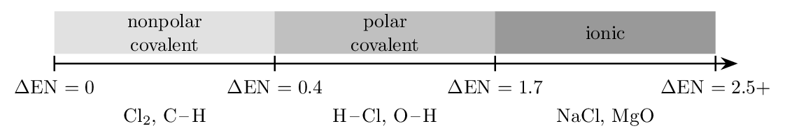
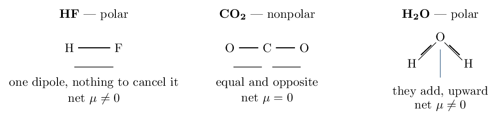
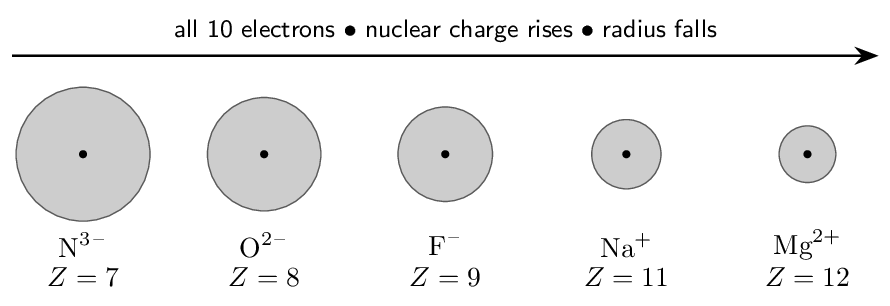
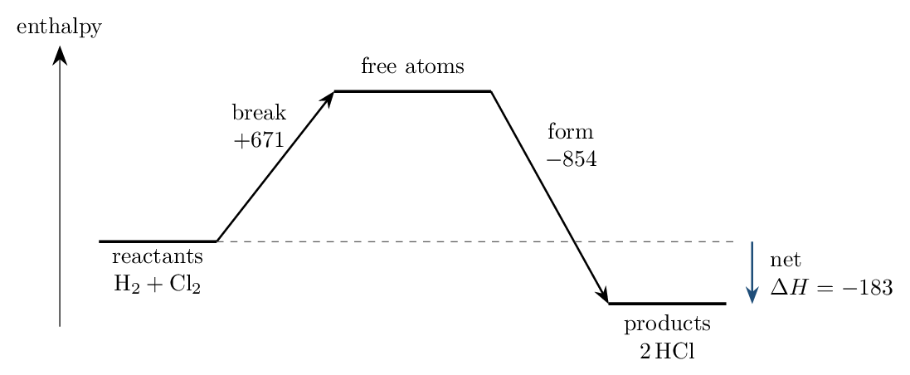
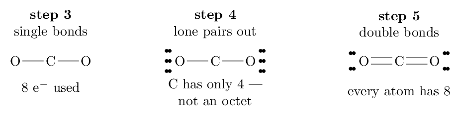
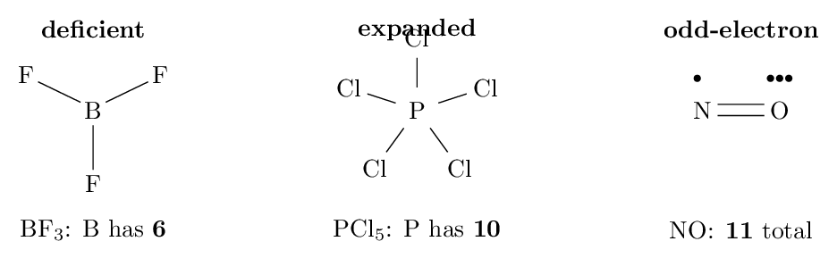
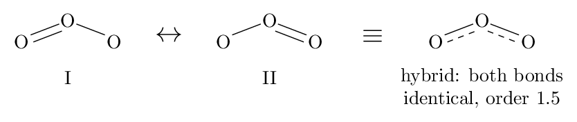
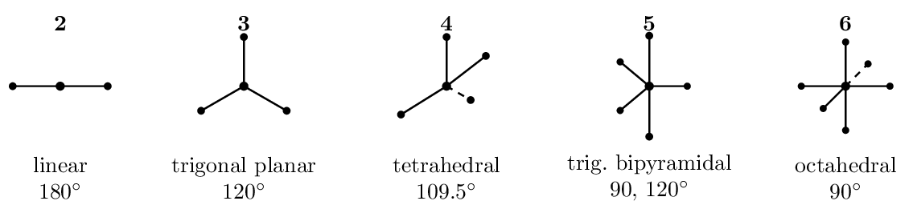
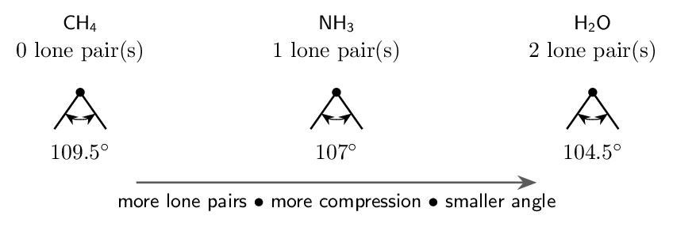

Each skill is a ladder: a fully worked example in the solid-framed box, then four YOUR TURN questions in the dashed box — same skill, new numbers, no help.
- Work all four before checking anything.
- Check against the gray check: line. All four right on the first try earns the tick on the tracker (last page).
- Any misses: re-read the worked example, then redo the missed ones from a blank page.
Ladder 1 • Bond type from electronegativity
ZUM §8.1–8.2 Electronegativity is an atom's pull on the electrons in a bond. It rises across a period and falls down a group — for the Coulombic reasons from Chapter 7 — so fluorine (4.0) is the highest and the alkali metals the lowest.The difference between two bonded atoms decides the bond type:

The boundaries are guidelines, not laws — bonding is a continuum, and 1.7 is a convention rather than a cliff. A faster rule of thumb: metal \(+\) nonmetal is ionic, nonmetal \(+\) nonmetal is covalent.
Electronegativities: H 2.1, C 2.5, N 3.0, O 3.5, F 4.0, Cl 3.0, Na 0.9, Mg 1.2.
| Bond | \(\Delta\)EN | Type | Which atom is \(\delta-\)? |
|---|---|---|---|
| \(\ce{H-F}\) | \(4.0-2.1 = 1.9\) | polar covalent (nearly ionic) | F |
| \(\ce{C-H}\) | \(2.5-2.1 = 0.4\) | essentially nonpolar | C, barely |
| \(\ce{Na-Cl}\) | \(3.0-0.9 = 2.1\) | ionic | Cl (a full \(\ce{Cl-}\)) |
| \(\ce{O-O}\) | \(3.5-3.5 = 0\) | nonpolar covalent | neither |
- Classify \(\ce{N-H}\) and say which atom carries \(\delta-\).
polar covalent, \(\Delta\)EN \(= 0.9\); N is \(\delta-\)
- Classify \(\ce{Mg-O}\). ionic, \(\Delta\)EN \(= 2.3\)
- Rank \(\ce{C-F}\), \(\ce{C-O}\), \(\ce{C-N}\) by increasing bond polarity.
\(\ce{C-N}\) \(<\) \(\ce{C-O}\) \(<\) \(\ce{C-F}\)
- \(\ce{H-Cl}\) and \(\ce{H-F}\) are both polar. Which is more polar, and
why? \(\ce{H-F}\) — larger \(\Delta\)EN
(a) polar covalent, \(\Delta\)EN \(= 0.9\); N is \(\delta-\) (b) ionic, \(\Delta\)EN \(= 2.3\) (c) \(\ce{C-N}\) \(<\) \(\ce{C-O}\) \(<\) \(\ce{C-F}\) (d) \(\ce{H-F}\) — larger \(\Delta\)EN
Ladder 2 • Dipole moments and molecular shape
ZUM §8.3A polar bond does not guarantee a polar molecule. Bond dipoles are vectors: they can cancel.

- Is \(\ce{CCl4}\) (tetrahedral) polar? Explain. no — symmetric, dipoles cancel
- Is \(\ce{NH3}\) (trigonal pyramidal) polar? Explain.
yes — the lone pair breaks the symmetry
- \(\ce{CH3Cl}\) is tetrahedral like \(\ce{CCl4}\). Is it polar?
yes — the outer atoms differ
- Can a molecule with nonpolar bonds ever be polar?
no
(a) no — symmetric, dipoles cancel (b) yes — the lone pair breaks the symmetry (c) yes — the outer atoms differ (d) no
Ladder 3 • Ion sizes and isoelectronic series
ZUM §8.4Forming an ion changes the electron count but never the nuclear charge. Everything follows from that.
- Cations are smaller than their parent atoms: electrons are removed, often emptying the outer shell entirely, and the unchanged nuclear charge now pulls on fewer electrons.
- Anions are larger: added electrons increase electron–electron repulsion in the valence shell while the nuclear charge stays put, so the cloud expands.
- In an isoelectronic series — same electron count — size falls as nuclear charge rises.

Rank \(\ce{S^2-}\), \(\ce{Cl-}\), \(\ce{K+}\), and \(\ce{Ca^2+}\) by size, largest first, and justify.
First establish they are isoelectronic. \(16+2 = 18\), \(17+1 = 18\), \(19-1 = 18\), \(20-2 = 18\). All have 18 electrons — the argon configuration — so shielding is identical across the set. That is what makes the comparison clean. Now the only variable left is nuclear charge: 16, 17, 19, 20. \[ \ce{S^2-} > \ce{Cl-} > \ce{K+} > \ce{Ca^2+} \] Why: each ion holds the same 18 electrons, but calcium's 20 protons pull them in far harder than sulfur's 16. More nuclear charge on an unchanged electron cloud means a smaller radius. Note what the explanation did not say: nothing about full shells or stability. Every ion here has the same full shell — that is precisely the point, and it is why only Coulomb's law can distinguish them.- Which is larger, \(\ce{Fe^2+}\) or \(\ce{Fe^3+}\)? Why?
\(\ce{Fe^2+}\)
- Which is larger, \(\ce{Br}\) or \(\ce{Br-}\)? Why? \(\ce{Br-}\)
- Rank \(\ce{N^3-}\), \(\ce{O^2-}\), \(\ce{F-}\) by size and justify in one
sentence. \(\ce{N^3-}\) \(>\) \(\ce{O^2-}\) \(>\) \(\ce{F-}\)
- \(\ce{K+}\) and \(\ce{Cl-}\) are isoelectronic. Explain why the cation
is the smaller one. potassium has more protons on the same 18 electrons
(a) \(\ce{Fe^2+}\) (b) \(\ce{Br-}\) (c) \(\ce{N^3-}\) \(>\) \(\ce{O^2-}\) \(>\) \(\ce{F-}\) (d) potassium has more protons on the same 18 electrons
Ladder 4 • Lattice energy
ZUM §8.5 Lattice energy is the energy released when gaseous ions come together into a crystal — large and negative, and the reason ionic solids have high melting points. It is pure Coulomb's law: \[ E \;\propto\; \frac{Q_1 Q_2}{r} \] Charge dominates. Doubling a charge doubles the numerator; changing ionic radius moves the denominator only modestly. So when comparing two compounds, look at charges first and only use size as a tie-breaker.Here the charges are identical (\(1+\), \(1-\)), so charge cannot decide it and size becomes the tie-breaker. Bromide is larger than chloride, so \(r\) is larger and the energy smaller: \(\ce{NaCl}\).
The order of operations: compare \(Q_1Q_2\) first. Only if it ties do you compare \(r\). Reversing that order is how students conclude that \(\ce{LiF}\) beats \(\ce{MgO}\).- Larger lattice energy: \(\ce{KCl}\) or \(\ce{CaO}\)? Why?
\(\ce{CaO}\)
- Larger lattice energy: \(\ce{LiF}\) or \(\ce{KF}\)? Why?
\(\ce{LiF}\)
- Larger lattice energy: \(\ce{MgO}\) or \(\ce{MgS}\)? Why?
\(\ce{MgO}\)
- Which melts higher, \(\ce{NaF}\) or \(\ce{MgF2}\)? Connect your answer
to lattice energy. \(\ce{MgF2}\) — larger cation charge, larger lattice energy
(a) \(\ce{CaO}\) (b) \(\ce{LiF}\) (c) \(\ce{MgO}\) (d) \(\ce{MgF2}\) — larger cation charge, larger lattice energy
Ladder 5 • Bond energies and \(\Delta H\)
ZUM §8.8 Breaking a bond always costs energy; forming one always releases it. There are no exceptions, and the whole calculation follows: \[ \boxed{\;\Delta H \approx \sum(\text{bonds broken}) - \sum(\text{bonds formed})\;} \]
Uphill to tear everything apart, further downhill to build the products. The net is the difference — and the answer is an estimate, because a tabulated bond energy is an average over many molecules.
Estimate \(\Delta H\) for \(\ce{H2(g) + Cl2(g) -> 2HCl(g)}\). Bond energies (kJ/mol): \(\ce{H-H}\) 432, \(\ce{Cl-Cl}\) 239, \(\ce{H-Cl}\) 427.
Bonds broken — one of each reactant bond: \[ 432 + 239 = 671\,\mathrm{kJ} \] Bonds formed — two \(\ce{H-Cl}\): \[ 2(427) = 854\,\mathrm{kJ} \] Net: \[ \Delta H \approx 671 - 854 = \mathbf{-183~kJ} \] Reality check. The measured value is -184.6 kJ — agreement to under 1%, which is unusually good. Expect 5–10% for larger molecules, because the tables average a bond over every compound it appears in, and a \(\ce{C-H}\) bond in methane is not identical to one in ethanol. Sign sanity: more energy came out than went in, so the reaction is exothermic and \(\Delta H\) is negative. If your answer is positive for a combustion, you have reversed the subtraction.- Estimate \(\Delta H\) for
\(\ce{CH4(g) + 2O2(g) -> CO2(g) + 2H2O(g)}\).
- Estimate \(\Delta H\) for
\(\ce{N2(g) + 3H2(g) -> 2NH3(g)}\).
- The measured value for (a) is -802 kJ. Why does
the estimate differ? tabulated bond energies are averages
- Is breaking the \(\ce{N#N}\) bond endothermic or exothermic, and what
does its size (941) tell you about nitrogen gas?
endothermic; \(\ce{N2}\) is very unreactive
(a) -824 kJ (b) -109 kJ (c) tabulated bond energies are averages (d) endothermic; \(\ce{N2}\) is very unreactive
Ladder 6 • Drawing Lewis structures
ZUM §8.9–8.10Five steps, in this order, every time:
- Count total valence electrons (add for a negative charge, subtract for a positive one).
- Place the least electronegative atom at the centre — never hydrogen, which forms only one bond.
- Join everything with single bonds, then subtract \(2\) electrons per bond.
- Distribute the remainder as lone pairs on the outer atoms first, completing their octets.
- If the centre is short of an octet, make multiple bonds by moving outer lone pairs into the bond.

- Total valence electrons in \(\ce{CH4}\), and draw it.
- Total valence electrons in \(\ce{NH4+}\), and draw it.
8 — subtract one for the \(+\) charge
- Draw \(\ce{CO}\) and state the bond order. 10 electrons, a triple bond
- Draw \(\ce{SO2}\) and say how many lone pairs sit on the sulfur.
18 electrons, one lone pair on S
(a) 8 (b) 8 — subtract one for the \(+\) charge (c) 10 electrons, a triple bond (d) 18 electrons, one lone pair on S
Ladder 7 • Exceptions to the octet rule
ZUM §8.11Three kinds, and each is recognizable on sight.

- Electron deficient — Be and B are content with 4 and 6.
- Expanded octet — only for central atoms in period 3 or below, which have empty \(d\) orbitals available. Nitrogen can never expand; phosphorus can.
- Odd electron — an odd total makes an octet arithmetically impossible. These species are radicals and highly reactive.
Both phosphorus and nitrogen are group 5A with five valence electrons, so on paper both might bond to five chlorines. But nitrogen is in period 2: its valence shell is \(n = 2\), which contains only \(2s\) and \(2p\) orbitals — room for eight electrons and no more. Five bonds would require ten.
Phosphorus is in period 3. Its valence shell has \(3s\), \(3p\) and empty \(3d\) orbitals, which can accommodate the extra pair. Ten electrons around phosphorus is therefore possible.
The rule in one line: an expanded octet requires an available \(d\) subshell, so it is possible from period 3 downward and impossible in period 2. Any structure you draw with ten electrons on N, O, F or C is wrong. Count \(\ce{PCl5}\) to confirm: \(5 + 5(7) = 40\) valence electrons. Five \(\ce{P-Cl}\) bonds use 10; the remaining 30 form three lone pairs on each chlorine. Phosphorus ends with 10 electrons — an expanded octet, legitimately.- How many electrons surround the sulfur in \(\ce{SF6}\), and why is
that allowed? 12 — sulfur is period 3
- How many surround the boron in \(\ce{BH3}\)?
- Why can \(\ce{OF2}\) not have an expanded octet? oxygen is period 2, no \(d\) orbitals
- \(\ce{NO2}\) has 17 valence electrons. What does that odd number
tell you? it is a radical, so no octet is possible
(a) 12 — sulfur is period 3 (b) 6 (c) oxygen is period 2, no \(d\) orbitals (d) it is a radical, so no octet is possible
Ladder 8 • Formal charge
ZUM §8.12When more than one Lewis structure obeys the rules, formal charge picks the best one:
\[ \text{FC} = (\text{valence electrons}) - (\text{lone electrons}) - \tfrac{1}{2}(\text{bonding electrons}) \]Equivalently: count the atom's own dots, plus one electron from each bond, and subtract from its group valence.
The preference rules, in order:- Formal charges as close to zero as possible.
- Any negative formal charge on the most electronegative atom.
- Avoid like charges on adjacent atoms.
Both structures below use all 16 valence electrons and give every atom an octet. Formal charge decides.
Structure A — \(\ce{O=C=O}\). \[ \text{C}: 4 - 0 - \tfrac{1}{2}(8) = \mathbf{0} \qquad \text{each O}: 6 - 4 - \tfrac{1}{2}(4) = \mathbf{0} \] Structure B — \(\ce{O#C-O}\). \[ \text{C}: 4 - 0 - \tfrac{1}{2}(8) = \mathbf{0} \] \[ \text{triple-bonded O}: 6 - 2 - \tfrac{1}{2}(6) = \mathbf{+1} \qquad \text{single-bonded O}: 6 - 6 - \tfrac{1}{2}(2) = \mathbf{-1} \] Verdict: A. Every formal charge is zero, satisfying rule 1 outright. B is not illegal — it obeys the octet rule and the electron count — but it separates charge unnecessarily, and worse, puts a positive charge on oxygen, the second most electronegative element in the table. The check that catches arithmetic slips: formal charges must sum to the overall charge on the species. Structure A: \(0+0+0 = 0\). Structure B: \(0 + 1 - 1 = 0\). Both sum correctly, so the comparison is between two valid structures rather than one valid and one botched.- Formal charge on N in \(\ce{NH4+}\) (four bonds, no lone pairs).
- Formal charge on B in \(\ce{BF3}\) (three bonds, no lone pairs).
- In the \(\ce{NO3-}\) structure from Ladder 6, give the formal charge
on the double-bonded O and on a single-bonded O.
- Verify that your answers to (c), together with N's formal charge
of \(+1\), sum to the ion's charge. \(+1 + 0 + 2(-1) = -1\)
(a) \(+1\) (b) \(0\) (c) \(0\) and \(-1\) each (d) \(+1 + 0 + 2(-1) = -1\)
Ladder 9 • Resonance
ZUM §8.12When several equally good Lewis structures differ only in where the multiple bonds and lone pairs sit, none is correct alone. The real molecule is a single resonance hybrid — an average.

The molecule does not flip between the structures. A resonance hybrid is one unchanging species whose electrons are delocalized; the separate drawings are a limitation of Lewis notation, not a description of anything happening in time.
- How many resonance structures does \(\ce{SO2}\) have, and what is
its \(\ce{S-O}\) bond order? two; order 1.5
- The carbonate ion \(\ce{CO3^2-}\) has three equivalent structures.
Give the \(\ce{C-O}\) bond order. \(4/3 \approx 1.33\)
- Predict how the three \(\ce{C-O}\) bond lengths in carbonate
compare, and why. all three identical
- A student says ozone “rapidly switches between its two
structures”. Correct them. it does not switch — the electrons are delocalized
(a) two; order 1.5 (b) \(4/3 \approx 1.33\) (c) all three identical (d) it does not switch — the electrons are delocalized
Ladder 10 • VSEPR: predicting shape
ZUM §8.13Electron domains — bonds (single, double or triple each count once) and lone pairs — repel and get as far apart as possible. Count the domains on the central atom and the geometry follows.


All three molecules below have four electron domains, so all three have a tetrahedral electron geometry. Their molecular shapes differ entirely.
| Bonds | Lone pairs | Molecular shape | Angle | ||
|---|---|---|---|---|---|
| \(\ce{CH4}\) | 4 | 0 | tetrahedral | 109.5 | thinsp;degree |
| \(\ce{NH3}\) | 3 | 1 | trigonal pyramidal | 107 | thinsp;degree |
| \(\ce{H2O}\) | 2 | 2 | bent | 104.5 | thinsp;degree |
- Domains, electron geometry, and molecular shape for \(\ce{BF3}\).
3, trigonal planar, trigonal planar
- Same three for \(\ce{SO2}\) (one lone pair on S). 3, trigonal planar, bent
- Same three for \(\ce{CO2}\). 2, linear, linear
- \(\ce{PCl3}\) and \(\ce{BCl3}\) both have three bonded atoms, but only
one is polar. Which, and why? \(\ce{PCl3}\) — it has a lone pair, so it is pyramidal and the dipoles do not cancel
(a) 3, trigonal planar, trigonal planar (b) 3, trigonal planar, bent (c) 2, linear, linear (d) \(\ce{PCl3}\) — it has a lone pair, so it is pyramidal and the dipoles do not cancel
Mastery tracker
Tick a row only if all four YOUR TURN questions were right on the first attempt.
| First try? | Skill | Ladder | If not, re-read… |
|---|---|---|---|
| \(\square\) | bond type from \(\Delta\)EN | 1 | the scale is a guideline |
| \(\square\) | molecular polarity | 2 | bonds AND shape |
| \(\square\) | ion sizes, isoelectronic | 3 | same electrons, count protons |
| \(\square\) | lattice energy | 4 | charge first, size as tie-breaker |
| \(\square\) | bond energies and \(\Delta H\) | 5 | broken minus formed |
| \(\square\) | Lewis structures | 6 | the electron count is the check |
| \(\square\) | octet exceptions | 7 | expansion needs period 3 |
| \(\square\) | formal charge | 8 | closest to zero wins |
| \(\square\) | resonance | 9 | one hybrid, not switching |
| \(\square\) | VSEPR | 10 | electron vs molecular geometry |
10/10: this chapter feeds Unit 2 directly, and Ladders 6–10 are the ones the exam draws on most heavily.
7–9: redo the missed ladders tomorrow, not today.
6 or fewer: the misses almost always cluster in one of two places. If they are in Ladders 3–5, the problem is explanation — you are reaching for octets and stability where the answer must name a charge, a distance, or a shielding difference. If they are in Ladders 6–10, the problem is procedure, and the fix is mechanical: redraw every Lewis structure in the chapter from a blank page, counting electrons at the start and checking the total at the end. Those are different problems with different fixes — diagnose which one you have before redoing anything.